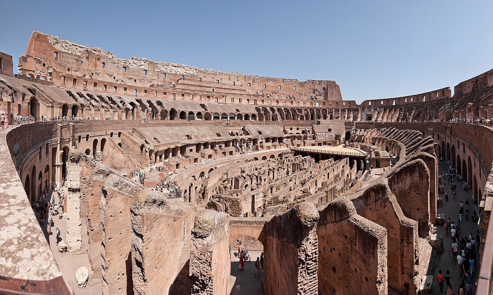
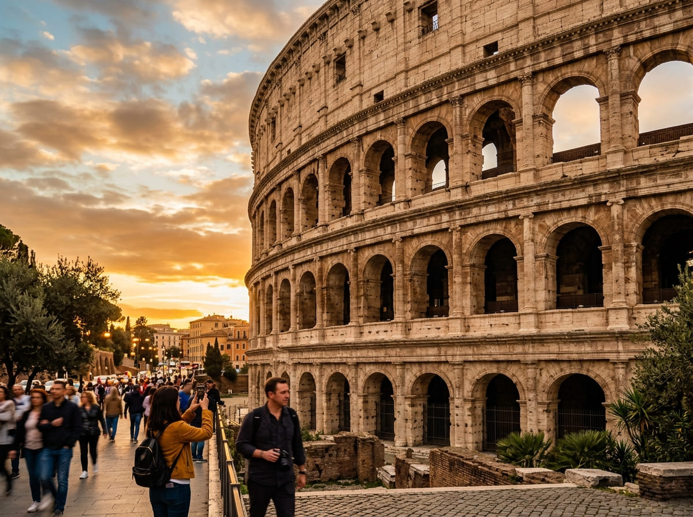

Vatican & Colosseum Combo Tour: See Rome in One Day

A Vatican and Colosseum combo tour is one full day with a guide that covers both of Rome's top sights. The morning is the Vatican side (Vatican Museums, Sistine Chapel, and St. Peter's Basilica). The afternoon is ancient Rome (the Colosseum, Roman Forum, and Palatine Hill). Every ticket skips the main lines at both sites. The full day runs about 6 to 8 hours, with a lunch break in the middle when you make your own way across the city. Prices start around €141 per person for a standard group and go up to €259 for a semi-private group.
Primary keywords: rome combo colosseum and vatican tour, rome in a day tour with colosseum and vatican museums
A Vatican and Colosseum combo tour is the simplest way to tick off Rome's two must-see sights in a single day.
On their own, the Vatican and the Colosseum each take a morning or an afternoon, and both sell out their time slots fast in peak months.
Booking them as one combo means a guide plans the order, the tickets are already paired up, and you skip the long entry lines at both ends.
The one thing to know is that the two sites sit on opposite sides of the city, so you cross Rome in the middle of the day.
This guide compares the three combos with prices, inclusions, and meeting points, then covers what you see on each side, how the transfer works, and how long the day really takes.
📋 In This Guide
🎟 Top Vatican Tickets & Tours
Vatican and Colosseum Combo Tours
All three tours below are sold as one guided day, skip the line at both the Vatican and the Colosseum, and can be cancelled free up to 24 hours before you start. Here is a quick comparison, then the inclusions, price, and meeting point for each.
| Tour | Price | Duration | St. Peter's Basilica |
|---|---|---|---|
| Full-Day Combo Tour | €196 | 7.5 to 8 hrs | Included |
| Vatican & Colosseum Group Tour | €141 | 5.5 to 6 hrs | Included |
| Small-Group Combo Tour | €209 / €259 | 6 to 7 hrs | Not included |
Vatican, Colosseum & St. Peter's Full-Day Tour
The most complete option, with everything in one guided day including St. Peter's Basilica.
- Skip-the-line entry to the Vatican Museums and the Sistine Chapel
- Direct guide-led access into St. Peter's Basilica
- Skip-the-line entry to the Colosseum, Roman Forum, and Palatine Hill
- A professional English-speaking guide for both the morning and afternoon sessions, plus individual audio headsets
- Prices: Adult (18+ years): €196 per person, Children (2 - 17 years): €186
- Meeting point: The bottom of the steps across from Vatican Museums entrance, near Caffè Vaticano on Via Sebastiano Veniero.
- Free cancellation up to 24 hours before the day of your visit
- Not included: Transport between the two sites, food and drinks, the St. Peter's dome climb, and hotel pickup
Vatican Museum & Colosseum Guided Tour
The best value. Covers both sides but finishes on the Vatican side after the Sistine Chapel and St. Peter's Basilica.
- This tour takes about 7 hours with the tour starting at 8:00 am
- Skip-the-ticket-line entry to the Vatican Museums, the Sistine Chapel, and St Peter's Basilica
- Entry to the Colosseum, Roman Forum, and Palatine Hill
- A professional English-speaking guide will be there with you throughout the tour and an audio headset will be given
- Price: Adult (18+ years): €141, Youth (7 - 17 years): €106, Infant (under 7 years): Free
- Meeting point: A check-in office near Via Sebastiano Veniero for the Vatican session, then a separate meeting point near Largo Gaetana Agnesi by Colosseo metro for the Colosseum session
- Free cancellation up to 24 hours before the day of your visit
- Not included: the guided walk through St. Peter's Basilica, transport between the two sites, lunch, and hotel pickup
Vatican Museums & Colosseum Small group/Semi-private Tour
The quieter option. Same sights as the full-day tour, but with a strict limit on group size so you stay close to the guide.
- This combo tour takes about 7 hours, with morning slots at 8:45 am and 10:15 am
- Priority skip-the-line entry to the Vatican Museums, the Sistine Chapel, the Colosseum, Roman Forum, and Palatine Hill
- An expert English historian guide leading a small group with audio headsets being provided
- Prices: Adult (18+ years): €209 for a small group (max 20), and €259 for a semi-private group (max 10)
- Meeting point: An agency office next to the Vatican Museums, or near the Colosseum, depending on which way your tour runs. You are told which when you book
- Free cancellation up to 24 hours before the day of your visit
- Not included: Transport between the two sites, lunch, the St. Peter's dome climb, and hotel transfers
Which Combo Tour to Choose
All three cover the same core sights. The choice comes down to the basilica, group size, and how much time and money you want to spend.
- On the lowest budget: the €141 combo tour is the best value. You skip only the guided walk through St. Peter's, which you can still visit on your own another time.
- Want everything in one go: the €196 full-day tour includes St. Peter's Basilica in a standard group and is the most complete.
- Want a small group: the small-group tour keeps you to 20 people (€209) or 10 (€259), so you hear the guide easily and do not get lost in a crowd.
If you are weighing this up against the other Vatican options, our best Vatican tour guide compares them side by side.

What You See on the Vatican Side
The Vatican half is usually the morning. You start at the Vatican Museums, walk the core galleries, and finish inside the Sistine Chapel.
Along the way the guide points out the big names: the Gallery of Maps, the Raphael Rooms, and the long run of sculpture and tapestry that leads toward Michelangelo's ceiling.
The Sistine Chapel is the high point. It is a quiet room by rule, so the guide briefs you on the ceiling and the Last Judgment before you go in, then you spend your time inside looking up without a running commentary.
On the small-group tour, you then pass straight into St. Peter's Basilica through a connecting route, which saves you from walking back around and joining the public security line at the front of the square.
The guide walks you through the main floor and points out Michelangelo's Pietà and the scale of the dome. The best-value combo tour ends on the Vatican side after the Sistine Chapel, so pick based on whether St. Peter's matters to you.
What You See on the Colosseum Side
After lunch you move to ancient Rome. The Colosseum is first. You go in past the main line and the guide takes you around the first and second tiers, explaining how the arena worked, where the crowd sat, and what went on below the floor.
Some versions add arena-floor access as an upgrade, but the standard combo covers the tiered walkway, which gives you the full view across the amphitheater.
From there you walk into the Roman Forum, the flat stretch of ruins that was the center of the old city, and up onto Palatine Hill, where the emperors lived.
This part is open-air and involves slopes and uneven stone, so it is the most tiring stretch of the day. The payoff is the view: from the top of the Palatine you look back over the Forum and across to the Colosseum.
Getting Between the Two Sites
This is the one thing that catches people out, so plan for it. The Vatican and the Colosseum sit about 4.5 km apart on opposite sides of central Rome, and the transfer between them is not included in any of these tours. You cross the city yourself during the midday break. You have three ways to do it:
- Metro (cheapest and most reliable): Take Line A from Ottaviano or Cipro to Termini, change to Line B toward Laurentina, and get off at Colosseo. It takes about 25 to 30 minutes and a single ticket is €1.50.
- Taxi or rideshare: A taxi from the Vatican stands takes roughly 20 to 35 minutes depending on traffic and costs about €12 to €20.
- Walking: It is a 50 to 60 minute walk past Piazza Venezia. It is doable, but on a full day of touring most people would rather save their legs.
Build the Metro time and a sit-down lunch into your plan. The gap between the morning and afternoon sessions is 1.5 to 2 hours, which is enough to eat and travel without rushing. If you are new to the city, the Metro is the easy choice, and our how to get to the Vatican guide covers the same lines in more detail.
How Long the Day Takes
Plan for a long day on your feet. The shortest combo runs about 5.5 to 6 hours of tour time, and the most complete runs 7.5 to 8 hours, before you add the midday transfer and lunch. Start times are in the morning, between 8:30 am and 10:00 am, so you finish in the late afternoon or early evening.
Expect to walk a lot. A full combo day adds up to roughly 10,000 to 15,000 steps across museum floors, ancient staircases, and the slopes of Palatine Hill. Wear shoes you have already broken in. If you are travelling with children or anyone who tires easily, the shorter GetYourGuide tour is the gentler pick.
Is a Vatican and Colosseum Combo Tour Worth It?
For most first-time visitors, yes. Booking the Vatican and the Colosseum together saves you money against buying two separate guided tours, usually in the range of 18 to 22 percent, and it saves you the bigger job of lining up two time slots that work back to back.
Skip-the-line entry at both sites is the other win. In peak season the standard queues at the Vatican and the Colosseum are long enough to eat an hour out of your day each, and a combo removes both.
It is worth less if you want to go slowly. Doing both sights in one day is efficient, but it is a lot to take in, and you will not linger. If you have several days in Rome and prefer a relaxed pace, splitting them across two days may suit you better.
But if your time is tight and you want to see the two things everyone comes to Rome for, the combo is the practical answer.
What to Bring and Wear
A few rules apply at both sites, and getting them wrong can cost you entry.
The Vatican has a strict dress code. Your shoulders and knees must be covered inside the Museums, the Sistine Chapel, and St. Peter's Basilica. No shorts, no sleeveless tops, no short skirts. A light scarf to cover up works in warm weather. Our Vatican dress code guide has the full details.
Bring a photo ID for everyone in your group. Both the Vatican and the Colosseum now require the name on the booking to match a government ID, and you may be asked to show a passport or national ID card at security. Names cannot be changed after you book, so enter them correctly.
Pack light. Large backpacks, suitcases, tripods, and metal-tipped umbrellas are not allowed at either site. Even with skip-the-line tickets, you still pass through airport-style security screening at both, so leave extra time at the gate in busy periods.
Booking Tips
Book ahead in peak months. Spring and autumn weekends and the whole summer sell out their morning slots well in advance, and the combos run on fixed departure times. Booking a week or more out gives you the pick of the start times.
Choose a morning start. All three tours begin in the morning for a reason: you get the Vatican before the worst of the crowds and finish ancient Rome before it closes. An early slot also leaves you the evening free.
Use the free cancellation. All three can be cancelled up to 24 hours before for a full refund, so if your plans are not fixed yet, you can book now to lock in a slot and still change your mind the day before.
Frequently Asked Questions
Can you really see the Vatican and the Colosseum in one day?
Yes, and that is exactly what these tours are built for. The day is full and involves a fair amount of walking, but a guide keeps you moving in the right order so you see both without wasting time. Expect to be out for most of the day, roughly 6 to 8 hours plus the midday transfer.
Is transport between the two sites included?
No. None of these combos include the trip across the city. You make your own way during the lunch break, usually by Metro (about 25 to 30 minutes, €1.50) or taxi (about €12 to €20).
Do I get skip-the-line entries at both sites?
Yes. Every tour here includes skip-the-line tickets at the Vatican Museums and the Colosseum. You still pass through security screening at both, but you avoid the main ticket queues.
What is the cheapest Vatican and Colosseum combo?
The GetYourGuide Vatican Museum and Colosseum tour at €141 per person is the lowest-priced option in this guide. It covers the Vatican Museums, Sistine Chapel, Colosseum, Roman Forum, and Palatine Hill, without the St. Peter's Basilica walk.
How much walking is involved?
A lot. A full combo day comes to roughly 10,000 to 15,000 steps on museum floors, old staircases, and the slopes of Palatine Hill. Wear comfortable, broken-in shoes.
Can I bring a backpack or suitcase?
No large bags. Big backpacks, suitcases, tripods, and metal-tipped umbrellas are banned at both sites. Bring only a small bag.
Is the combo tour worth the money?
For most first-time visitors, yes. It saves roughly 18 to 22 percent against booking two separate guided tours, pairs the time slots for you, and skips the lines at both sites. It is worth less if you prefer a slow, unhurried pace.
Related Vatican Visitor Guides